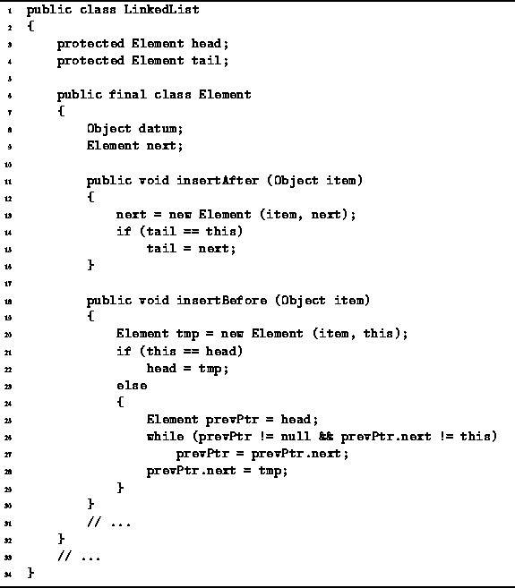

Data Structures and Algorithms
with Object-Oriented Design Patterns in Java
Data Structures and Algorithms
with Object-Oriented Design Patterns in Java
Consider the methods insertAfter and insertBefore
of the LinkedList.Element class shown in Program  .
Both methods take a single argument that specifies
an item to be inserted into the list.
The given item is inserted either in front of
or immediately following this list element.
.
Both methods take a single argument that specifies
an item to be inserted into the list.
The given item is inserted either in front of
or immediately following this list element.

Program: LinkedList.Element class insertAfter and insertBefore methods.
The insertAfter method is almost identical to append. Whereas append inserts an item after the tail, insertAfter inserts an item after an arbitrary list element. Nevertheless, the running time of insertAfter is identical to that of append, i.e., it is O(1).
To insert a new item before a given list element, it is necessary to traverse the linked list starting from the head to locate the list element that precedes the given list element. In the worst case, the given element is the at the tail of the list and the entire list needs to be traversed. Therefore, the running time of the insertBefore method is O(n).
 Copyright © 1998 by Bruno R. Preiss, P.Eng. All rights reserved.
Copyright © 1998 by Bruno R. Preiss, P.Eng. All rights reserved.